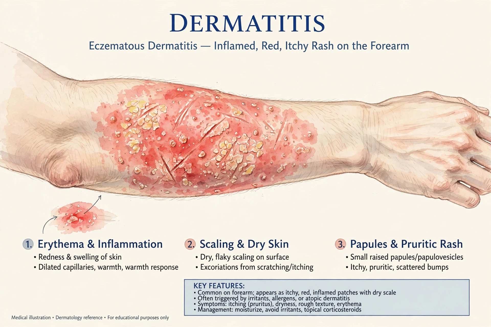

Dermatitis is inflammation of the skin, characterized by itchiness, redness and a rash. The term is often used interchangeably with eczema. Major types include atopic dermatitis, contact dermatitis, seborrhoeic dermatitis and stasis dermatitis.

Atopic dermatitis is a chronic, relapsing eczema linked to asthma and hay fever (the atopic triad, see asthma). Contact dermatitis is either irritant or allergic, e.g. to nickel or poison ivy. Seborrhoeic dermatitis affects oily areas such as the scalp (dandruff).
Management includes emollients, topical steroids, calcineurin inhibitors, and in severe atopic disease biologics; systemic prednisone is used only briefly. Some forms are manifestations of autoimmune disease.